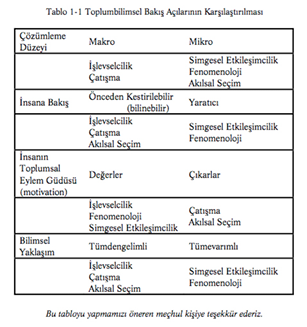

BÖLÜM 1 - TOPLUMU ANLAMA
İnsanlar genel olarak kuram okumaya pek hevesli değillerdir. Onu okullar, fabrikalar ve banliyöler ile, seçimler, düğünler, grevler, oyunlar ve tenis maçları gibi “gerçek dünya” (real world)nın üstünde serbestçe yüzen bir bilmeceler öbeği gibi, yalnız birbirleri ile bağlantılı soyut anlatımlar olarak görürler. Bu bir yanılgıdır. Kuramı gerçek hayattan ayırmak bir yana, dünyaya bakışımız bütünü ile, kuramsal bakış açımıza dayalıdır. Sosyolojik kuram ile ilgili okuma; kendimizin, dünyamızın ve hayatımızın günlük ve olağan olarak kabul edilen yönlerinin ne kadar alışılmışın dışında, karmaşık ve muğlak olduğu hakkında daha birçok şeyi anlama demektir.
Sosyologlar “sosyoloji yaparken”, konularına soğuk ve zihinleri boş olarak yaklaşmamaktadırlar. Konuları ister insanların ölümle ilgili davranışları, ister günümüz toplumunun bütün gelişimi ve muhtemel geleceği olsun, incelemekte oldukları olayın belirli bir yönü üzerinde odaklanırlar.3 Konularına bazı kabullerle yaklaşırlar, bazı araştırma yöntemlerine ağırlık verirler; ve cevap aradıkları bazı özel soruları vardır. Bu demektir ki, araştırmaları, sosyolojik kuramların geliştirdiği şekilde olaylara bakış tarzlarına dayanmaktadır. Kuramlar bunları açıklayıcı ve sistemli olarak ortaya koyar.
3 Bu özel konulan tartışan kuramsal bakış açıları için Bölüm 3 (Collins), Bölüm 5 (Kısım iki: Blumer), Bölüm 4 (Parsons ve Habermas)’e bakınız.
Aynı husus, sosyoloji dışındaki dünya için de geçerlidir. Düşünceleri, İkinci Dünya Savaşı’ndan bugüne kadar, devlet ekonomi idaresine hâkim olan John Maynard Keynes, fikirler “doğru da olsa, yanlış da olsa, genel olarak zannedildiğinden daha kuvvetlidir. Gerçekte dünya daha çok bunlar tarafından idare edilmektedir. Kendilerinin, entelektüel etkilerden muaf olduklarına inanan pratik insanlar, genellikle bazı zamanı geçmiş iktisatçıların esiridirler. Büyük makamları işgal eden ve gaipten sesler işiten deliler, büyük çılgınlıklarını, birkaç yıl öncesinin önemsiz bir akademisyen yazarının karalamalarından çıkarmışlardır”4 demektedir. Çağdaş sosyolojik kuramların toplumumuz ile ilgili olarak ileri sürdüğü farklı bakışlar, bir bütün olarak toplumun üyelerinin farklı bakış açılarına, iddialarına ve gözlemlerine tekabül eder.
4 John Maynard Keynes, The General Theory of Employment Interest and Money (London, Macmillan, 1936), s. 383.
“Sosyolojik kuram” ın insan davranışı ve tarihin yönü üzerindeki etkisi en dramatik olarak Karl Marx’ın eserlerinde görülür. Waterga-te’i ve Richard Nixon’ın istifasını açıklamaya çalışan bir gazeteci, boşanma nispetleriyle uğraşan bir evlilik-aile danışmanı ve kampüste neler olduğunu anlamaya çalışan yeni öğrenciler; bazı kuramsal kabulleri belirten kavramlara, insanların nasıl davrandığı ve toplumsal kurumların nasıl işlediğine ilişkin bilgilere başvururlar. Bundan başka, “Başkanın anayasaya aykırı davranışı” veya “bir kimseye bir rütbe vermek” ile ilgili olarak konuşma kabiliyetimiz bile, sosyolojik kuramın alanına giren, kendimizle ilgili birçok gerçeklere dayanır. Tıpkı bunun gibi, anlatmak istediğimiz konunun hem kendimiz hem de dinleyicilerimiz için açık ve anlaşılabilir olduğunu “bilmemiz” gerçeği de buna dayalıdır. Sosyolojik kuramlar çalışma ve aile, kuvvet, hürriyet ve baskı dünyası ile ilgili olmayan biçimsel, boş kutular içeren bir dünyadan oluşmaz. Aksine, bizim bu dünyayı nasıl gördüğümüz, nasıl anladığımız ve açıkladığımız, aynı zamanda içinde nasıl hareket ettiğimiz ve böylece, onun ne şekil aldığı ile yakından ilgilidir.
Sosyolojik Kuramın Yapısı
Sosyoloji kuramcıları farklıdırlar; çünkü kabullerini veya varsayımlarını (assumptions or hypotheses) sistematik olarak geliştirirler ve kuramlarının toplumsal hayatı ne ölçüde açıkladığını kapsamlı olarak anlatırlar. Bundan daha önemlisi, davranış ve toplumların işleyiş şekilleri ile ilgili yeni genel anlayışlar getirirler. Bu anlayışlar da yayılır ve ileriki yıllarda, asıl eseri hiç okumamış olan birçoklarının düşüncelerini etkileyebilir.
Sosyolojik kuramın fikirleri ortaya koymasının sistematik şekli, herhangi bir başka disiplinin (psikoloji, fizik, genetik ve diğerleri) “kuramı” ile paylaştığı bir niteliktir. Diğer disiplinlerle paylaştığı ikinci önemli bir nitelik de, aralarında apaçık farklar olan sayısız olayları, aralarındaki benzerlikleri ortaya çıkaran genel ilkelere bağlamasıdır. Öğrenci hareketleri, grevler ve isyanlar, hiyerarşik organizasyonlarda çatışma örnekleri olarak ele alınıp, aralarında ortak olan önemli özellikler belirlenir.5 Bunun gibi, lise öğrencileri ile danışmanların mülâkatları ve cinayet davaları, toplumun üyelerince paylaşılan düşünceler ve insan etkileşiminin önceden tahmin edilemeyen dinamikleri hakkında neler gösterebilecekleri bakımından incelenebi-
5 Bölüm 3’ e bakınız.
lir.6
6 Bölüm 5 ve 6’ya bakınız.
3Ancak, sosyolojik kuram bütün kuramların temel sistematik niteliklerini paylaşmakla beraber, bu terimden genellikle anlaşılan anlamdan birçok yönlerden farklıdır. Klasik kuram tanımı7 esas itibarıyla tümdengelimli (deductive) dir. Bazı genel kavramların ve çoğu zaman, bazı açıkça belirlenmiş kabullerin tanımı ile başlar; bu farklı kategorilere göre gözlemlediğimiz hususları nasıl tasnif edeceğimize dair kaideler koyar ve sonra ortaya bu fikirlerle ilgili birkaç genel önerme (proposition) çıkarır. Gözlemciler konularını sınıflandırdıktan sonra, genelleştirilmiş olan “kuram”, konunun yapısı ve davranışı hakkında mantık yolu ile birkaç belirli ifade çıkarmalarına yardımcı olur. Mendel genetik yasaları buna iyi bir örnektir, çünkü çocuklar arasında genlerin eşleşmesi ve özelliklerin (characteristics) dağılımı ile ilgili genel ifadeler, birçok tür ile ilgili sonuç çıkarmakta kullanılabilir. Bu gibi kuramlar, çevremizle ilgili olayları önceden tahmin etmek için çok güçlü araçlar olduğundan, hayvancılıktan paten imalatına kadar, modern hayatın her yönünde gereklidir.8
7 Bu konunun en mükemmel tartışması Ernest Nagel’in The Structure of Science (New York: Harcourt, Brace and World, 1961), özellikle s. 90-105.
8 Bilimsel araştırma ve buluşlar süreci kuramsal yapının bu tarifinden (anlatımından) çok daha karmaşıktır. Bilimsel kuramın bina edilmesiyle ilgili iyi (ve çok farklı) tartışmaları Karl Popper’ın The Logic of Scientific Discovery (London: Hutchinson. 1959); Thomas Kuhn’un The Structure of Scientific Revolutions (Chicago: University of Chicago Press, 1970): Stephen Toul-min’in “From Form to Function: “Philosophy and History of Science in the 1950’s and Now”, Daedalus 106, No. 3 (Summer 1977); Nagel, The Struc-ture of Science’da bulabilirsiniz.
Sosyolojik kuramın büyük bir kısmı bu çok açık ve belirgin olarak tarif edilen tipe dâhildir; ancak birçoğu da buna uymaz. İşlevselcilik kuramını ileride tartışacağımız Robert Merton, “Ders kitaplarında sosyolojik kuram olarak kabul edilenlerin çoğu, eldeki anlamlı malzemenin genel yaklaşımlarla anlatılmasından ibarettir”9 demektedir. Örneğin, bir kuram, insan güdülenmesiyle ilgili olarak bazı çok genel önermeler ileri sürüyorsa bu, bazı davranışların diğer bazı davranışlardan daha sık görülebileceği demek olabilir ve böylece gözlemciye, duruma yaklaşabilmesinde yardımcı bir tutamak verir. Ancak, somut önermeler olarak çok az şey sağlar.
9 Robert Merton, Social Theory and Social Structure, genişletilmiş baskı (New York: The Free Press, 1968) s. 141.
Bu gibi genel önermeler, tümdengelimli toplumsal bilim düşüncesine ters düşmemektedir. Buna benzer çalışmalar yapan bazı kuramcılar toplumsal örgütlenme ve toplumun gelişmesi ile ilgili tahmin veya test edilebilir anlatımlarla ilgilenmektedirler.10 Diğer bazı sosyologlar, böyle tümdengelimli “bilimsel” kuram ile hiç uğraşmazlar. Hattâ insan davranışı ile ilgili olarak böyle bir yaklaşımın geçerli olabileceğini reddedebilirler.11 İnsan davranışında sık sık tekrar edilen hususlara veya toplumsal örgütlenmenin mahiyetine yer vermek yerine, genel anlatımları, insanların toplumsal etkileşimlerinin nasıl geliştiği hakkındadır.12
10 Örneğin Dahrendorf’un çatışmanın önemi ile ilgili çalışması veya Par-sons’un kuramının büyük bir kısmı (3. ve 2. Bölümler).
11 Örneğin Garfinkel (Bölüm 6) ve Blumer’a (Bölüm 5) bakınız.
12 Toplumsal bilimin esas itibarıyla tabiî bilimlerden farklı olup olmadığı ve farklı ve diğerlerine benzemeyen kuram ve kanıtlara ihtiyaç olup olmadığı hususundaki tartışma ile ilgili olarak aşağıdakilere bakınız: Peter Winch, The Idea of a Social Science and Its Relation to Philosophy (London: Routledge and Kegan Paul, 1958); George Caspar Homans, The Nature of So-
cial Science (New York: Harcourt, Brace and World, 1967); Randall Collins, Conflict Sociology: Toward An Explanatory Science (New York: Academic Press, 1975), Bölüm I; Anthony-Giddens, The Constitution of Society (Cambridge: Polity, 1984).
Bu farklılıklardan dolayı, sosyolojik kuram, genel ve “formalize” yaklaşımları ve insan davranışını anlamak konusundaki ilgilerinin ötesinde ortak yönleri çok az olan bir bakış açıları (görüş tarzları) grubundan ibarettir. Ancak tümdengelimli modelden en uzak olan kuramlar bile, çok zaman herhangi bir kuramın en temel yapı taşları olarak tanımlanabilen bir kavramlar takımını içerir. Esasında, bir kavram, bir olayı (algılarımızı ve deneyimlerimizi adlandırma ve sınıflandırmada kullandığımız bir etiketi) temsil eden bir sözcük veya simge ya da özel vakalardan genelleştirilmiş soyut bir düşüncedir. Durkheim’ın kuralsızlık (anomie) kavramı ve Marx’ın yabancılaşma (alienation) kavramı sosyolojik kavramların klasik örnekleridir.
Bir kuramın anahtar kavramları toplumsal gerçekliğin belki de gözümüzden kaçacak olan kısımlarını görmemize yardımcı olur. Kavramlar, toplumsal olayları anlama ve çözümlemede gerekli ilk adımdır. Bütün bu kitap boyunca, okuyucunun, toplumsal gerçekliğin her bir bakış açısına göre açıklanan değişik yönlerini görmesine ve böylece toplumu anlamasına yardımcı olacak ana kavramlarını tanımladık.
13Toplumbilimsel kuramları birbirinden ayıran başlıca boyutlar arasında, doğa biliminden alınmış olan tümdengelimli modeli kabul ya da reddedişlerini de dikkate aldık.14 Bu, kuramların metodolojisinin çok önemli bir yönüdür. Kuramlar başka üç önemli yönden de birbirinden ayrılır. Bunlar, onların “konuları”, yaklaşımlarının gerisinde yatan “kabulleri” ve toplumsal kuramın yanıtlayabileceği ya da yanıtlaması gerektiğine inandıkları “soruların türleri”dir. Aşağıdaki kısımlar, bu metinde tartışılmakta olan kuramların örnek olduğu geçerli başlıca seçeneklerin bir genel özetini vermektedir.
13 Bu terimlerin hangi özel anlamlarda kullanılmış oldukları ile ilgili görüşleri için bu bölümün metodoloji kısmına bakınız.
14 Neil J. Smelser, ed., Sociology: An Introduction, 2nd ed. (New York: John Wiley, 1973), s. 13.
Konu
Konuları bakımından kuramsal bakış açıları, toplumsal yapı ve rollerin geniş ölçekli özellikleri (characteristics) ile ilgilenen bakış açıları ya da makrososyoloji ile; kişiler arası teke tek karşılaşmalar, insan etkileşimi ve haberleşmelerinin ayrıntıları ile ilgilenen bakış açıları ya da mikrososyoloji olmak üzere ikiye ayrılır.
Işlevselcilik ve çatışma kuramı, toplumsal yapının ve toplumsal kurumların genel yapısının kapsamlı özellikleri ile ilgilenen iki yaklaşımdır. Bunlar, Marx’ın sınıfları ya da Parsons’ın sanayi toplumlarında hâkim özellik olarak gördüğü tarafsız ilişkiler gibi, toplumsal konumun (mevki-position) genel kategorileri arasındaki ilişkiye (ve bunun anlamına) ağırlık verirler. Bütün sosyolojik konuların en geniş kapsamlısı olan toplumsal evrim tartışmaları, işlevselcilik ve çatışma kuramı bağlamında yer almaktadır.
Bu, makrososyolojik kuramlar kişilerin kavrayışlarını ve kararlarını konuları dışında sayar, demek değildir. Biz de burada, Smelser gibi; “toplumsal yapı içinde mevkiler ile davranışı birbirine bağlayan varsayımların her zaman en azından zımnî psikolojik söylemlere (assertions)”15 ve özellikle insan tabiatı ile ilgili genel düşüncelere dayandığını kabul etmekteyiz. Ancak, bu kuramcılar en fazla bireysel psikolojiye değil: toplum içindeki örgütler ve kurumlar ile, bunların içinde bireylerin oynadıkları kendilerine biçilmiş rollere dikkat ederler. Bireysel eylemin itici güçlerini (dynamics) çözümlemeye oldukça az zaman ayırırlar.
15 Alışveriş kuramı dışındaki akılsal seçim kuramcıları daha az determinist bir model kullanırlar ama yine de burada bireylerin belli değerleri ve amaçları davranışın sıkı habercileri olarak kabul edilir.
Simgesel etkileşimcilik ve fenomenolojinin bakış açıları da, en ince ayrıntıları ile insan etkileşimini incelediği için, daha farklı olamaz. Örneğin, şamatacı bir müşteri ile karşılaşmış olup bu duruma anlam vermeğe çalışan bir süpermarket çalışanının davranışının nasıl bireysel deneyimler ve algılamalarla beraber toplumsal tanımlara dayanacağını; ya da bir öğretmen ile bir öğrencinin birbirlerini nasıl anlayacaklarını (veya anlayamayacaklarını) tartışırlar. Bu mikrososyolojik yaklaşımlarca kullanılan kavramlar toplumsal yapının çeşitli yönlerini sınıflandırmaz ama, onun yerine, insanların belirli hareketlerini tartışmaya yarayacak söz dağarcığı oluşturur.
Bölüm 7’de tartışılan akılsal seçim kuramlarının sınıflandırılması daha zordur. Bireysel kararlar ve seçimler üzerinde yoğunlaşmakla birlikte, bu kuramlar -özellikle de Blau’nınki- onları toplumun meşruluğu gibi yapısal niteliklere bağlamağa çalışır. Yine de, işlevselciler ya da çatışma kuramcıları ile karşılaştırılınca, bir akılsal seçim bakış açısını kullanan sosyologları, genellikle ve çoğunlukla mikrososyolo-jik sorunlarla ilgilendirir.
Kabuller (Assumptions)
Toplumbilimi kuramcılarının en önemli kabulleri insan tabiatı ile ilgilidir; biz de bütün metin boyunca, onların insanlarla ilgili farklı görüşlerinin altlarını çizerek birbirleri ile karşılaştırdık. Kuramcılar özellikle, insan davranışının, aslında belirlenmiş ve böylece ilke olarak önceden bilinebilir olduğunu düşünenler ile insanın yaratıcılığını ön plana çıkaranlar olarak birbirinden ayrılırlar. En belirgin karşıtlık, bir yanda işlevselcilik ve akılsal seçim kuramları; öte yanda, simgesel etkileşimcilik ve fenomenoloji arasındadır.16
16 Bölüm 2’ye bakınız.
İlk görüşün en açıklayıcı felsefî ifadesi George Homans’ın çalışmalarında bulunmaktadır. Homans’ın ileri sürdüğü görüşler bireylerin seçimlerinin ve kararlarının oynadığı role ağırlık verir, fakat bütün yaklaşımı, “insan davranışının nedenleri vardır ve dolayısıyla ilke olarak tamamıyla açıklanabilir” inancına dayanır. Farklı zevklerin belli başlı kaynaklarını bulmak ve belirli bir kararı önceden kestirmek hemen hemen imkânsızdır ama, onlar yine de, Homans’ın kanıtlamaya çalıştığına göre, daha önceki belirli şartlar ve evrensel ilkeler ya da yasalarca belirlenir.
Aynı görüş, işlevselcilikte bulunmaktadır. Durkheim, Parsons ve Merton davranışı; bazı temel güçlerin ve ihtiyaçların ve toplumun belirgin değerlerinin ve içselleştirilmiş (internalized) özel normlar takımının, önceden bilinebilir en son bir işlevi olarak kabul ederler. Yine, burada da, işlevselcilerin açıklamaları bireysel kararları bilmezlikten gelmez; Parsons’ın eylem kuramı bireysel güdüler üzerine kurulmuştur. Burada önemli husus, işlevselcilerin, davranışı önceden belirlenmiş ve dolayısı ile ilke olarak tamamen açıklanabilir olarak görmekte olduklarıdır; bu, Merton’ın “bilimsel” tavır olarak hatırladığı ve onu toplumbilimine götüren tutumdur.17
17 Davranışçı psikoloji, gözlemlenemeyenlerin tartışılmasını bir yana bırakıp ve insan aklının “karakutusu” içinde olup bitenleri gözardı ederek, insan davranışını, önceden kestirme ve tanımlama girişimidir. Biz bunun, farelerde bile başarılı olma şansı bulunmadığına inanıyoruz. Bu yaklaşımı tercih eden kuramcılardan biri olan Homans’ın kendi açıklamalarında yine de
anlam ve değerlere merkezde yer vermesi dikkate değer.
Çatışma kuramı daha az içtenlikle belirlenimci/gerekirci (deter-ministic) kuramcılar olan Dahrendorf, Coser ve Collins’de çok açık olarak görülmektedir. Onların genel ve açıklayıcı önermeler (propo-sitions) arayışı, davranışın genel olarak belirlenmiş ve önceden bilinebilir olduğu varsayımını taşımaktadır. Bununla birlikte, çoğunlukla daha eleştirici ve ütopyacı yazarlar için de durum aynıdır. Marx’ın bütün evrim kuramı eninde sonunda belirlenimcidir.
Çatışma kuramcılarının ağırlık verdiği görüş açısı, kendi çıkarlarını sağlamaya çalışan “amaçlı bireyler ve topluluklardır. Aynı husus, akılsal seçim (rational choice) kuramcıları için de geçerlidir. Buna karşılık, işlevselciler daha çok bir toplum veya toplumsal kümenin genel değerlerini ve normlarını teşhis etme ve tanımlamaya ilgi duyarlar ve olaylarda bunların oynadıkları rolleri çözümlerken davranışı daha edilgin olarak görürler.
Ancak, insansal eyleme en çok önem veren fenomenoloji ve simgesel etkileşimciliğin mikro-sosyolojik bakış açılarıdır ve onların insanın doğası ile ilgili kabulleri temelde farklıdır. Bütün toplumsal bilimler (ve bunlara biyolojik bilimleri de ekleyeceğiz) amaçlı davranış ile ilgilenmekte olduklarından, jeoloji ve fizik gibi doğa bilimlerinden ayrılırlar. İnsanlarda bu, geniş bir simgeler ve anlamlar alanını; gözlemlenemeyen şeyleri kapsar.18
18 Kişisel davranışın tahmin edilmesi ile ortalama ya da topluluk davranışının tahmin edilmesinin aynı şey olmadığına dikkat edilmesi gereklidir: birincisinin imkânsız oluşu, ikincisinin de imkânsızlığı demek değildir. Topluluk davranışının önceden bilinmesi için, çoğu insanın, çoğu zaman nasıl tepki vereceğinin bilinmesi yeterlidir.
Simgesel etkileşimciler ile fenomenologlar bireyi etkin (active) ve yaratıcı (creative) olarak ele alan görüşün, davranışı önceden bilmeyi ve bilimsel sosyoloji yasalarını geliştirmeyi imkânsız kıldığına inanırlar. Böylece simgesel etkileşimciler davranışta sık sık tekrar eden önemli hususların varoluşunu inkâr etmemekle birlikte, bir etkileşim sırasında insanların anlamı yorumlamasında yaratıcı yaklaşımlarına ağırlık verirler. Onlar, öğrenilmiş tavır alışları ve anlamları içeren “ben” (me) ile, yenilikçi ve önceden kestirilemeyen (unpredictable) “ben” (I) arasında ayrım yaparlar.19 Fenomenoloji de, devamlı olan yorumlama ile ilgilenir; ancak, fenomenologlar bu iki beni (‘I’ ile ‘me’yi) karşılaştırmaktan daha çok, anlam çıkarmaların ve kabullerin yaygınlığına işaret ederler. Onlara göre bütün toplumsal dünyamız, toplum deneyimimiz ve toplumsal etkileşimimiz nesnel olarak gerçek olmayıp, zamanla inşa etmekte olduğumuz şeylerdir. Dolayısıyla, bu sürece sabit bir anlam ve yapı karakteri verecek yanıltıcı somut önermeler geliştirmemek gerekir.
19 Durkheim’ın görüşleri için Bölüm 2’ye bakınız.
İnsan davranışının önceden belirlenmiş olup olmadığı üzerinde önemli görüş ayrılığına ilâve olarak, bu bakış açıları insanların çıkarlar veya değerler tarafından güdülendiklerini kabul edip etmemekte ayrılırlar. Bu fark, işlevselcilik ve çatışma kuramı örneğinde en keskin hâliyle görülür.
İşlevselcilik, az çok açık olarak, insanların güdülerinin ve davranışlarının, esas itibarıyla, içselleştirdikleri toplumsal değerlerin bir işlevi olduğunu kabul eder. Başka bir deyişle, insanların temel amaçları onların belirli bir toplum içerisine doğmuş olmalarıyla oluşur: bağımsız olarak var olmazlar. İşlevselcilik, yine, bütün insanlarda ortak olan ve bütün toplumların karşılaması gereken ve karşıladıkları temel “ihtiyaçları” veya ‘işlevsel zorunlulukları” da kabul eder; ancak, bunlara fazla yer vermez. Toplumsal olarak aşılanmış değerler öne çıkarılır. Buna karşılık, çatışma kuramcıları, çoğu zaman apaçık-mış gibi ele aldıkları, ancak, aslında baskıdan uzak olmayı, iktidarda bulunmayı, azla yetinmeyip daha çok servet ve mevki sahibi olmayı içeren çıkarlara önem verirler. Bu kuramcılar, çıkarları, bütün toplumlarda ortak ve her durumda insan davranışının gerisindeki başlıca güç olarak görürler. Çatışma kuramcılarının belli bir topluma özgü değerleri tartışırken genellikle yaptıkları şey, bu değerlerin, gerçek çıkarları konusunda insanları yanıltmaktaki rolünü tasvir etmektir.
Diğer görüşler de, ya değerlerin ya da çıkarların önemli olduğunu kabul ederler. Simgesel etkileşimcilik değerleri “birinci ben” (me) içine sinmiş olarak görür; bu bakış açısına göre çıkarlar dikkate alınmaz. Fenomenoloji de insanların başkalarının belirli durumda belirli şekillerde davranacaklarına inandıklarını ileri sürerken, çıkarlardan çok değerlere ağırlık verir ve davranışın gerisindeki bu güveni insan davranışının temeli olarak kabul eder. Akılsal seçim (tercih) kuramcıları ise, insanların tercihlerini belirleyen toplumsal değer ve zevklerden söz ederler; ama uygulamada iddialarını, evrensel olduğuna inanılan -ve dolayısıyla kolaylıkla kabul edilen- toplumsal kabul ya da statü gibi amaçlara dayandırırlar. Bu bakımdan çatışma kuramının evrensel çıkarlar düşüncesine daha yakın gelirler.
Yöntembilimi (Methodology)
Modern kuram bakış açılarını (perspectives) birbirinden ayıran üçüncü önemli husus, araştırma ve kanıtlama yöntemlerinde, özellikle tümdengelimli (deductive) ya da tümevarımlı (inductive) düşünüşü kullanmaları arasındaki tercihleridir. Tümdengelimli (ya da tabiî bilim) yaklaşımında bir araştırma problemini açıklayıcı önermeler ile başlanır ve mantıksal muhakeme yolu ile bunun deneysel (empirical) sonuçlarına varılır. Bu yaklaşımda kuram kurmanın yolu, temel kavramların, varsayımları formüle etmede kullanılmadan önce açıklanmasını gerektirir. Örneğin, Durkheim’ın temel kavramları (bencillik, özgecilik, kuralsızlık ve kadercilik) intihar oranları ile ilgili çözümlemesinde anahtar bağımsız değişkenler olarak kullanılmıştır.20 Bundan sonra, varsayımlar (hypotheses) gerçek dünyadaki veriler (data) ile sınanmıştır.21
20 Buradaki sav, bir varsayımın doğru olduğunu ispat edemeyeceğiniz, çünkü elinizdeki veriler için aklınıza gelmemiş olan başka açıklamalar olabileceğidir. Ancak, varsayımınız ile bağdaşmayan veriler onun yanlış olduğunu gösterebilir. Bkz. Karl Popper, The Logic of Scientific Discovery, (London: Hutchinson, 1959).
21 Goffman’ın görüşleri için Bölüm 5’e bakınız.
Tümevarım yaklaşımını kullanan bilim insanları gözlem yaparak, veriler toplayarak başlarlar. Çözümlemeğe açıkça tanımlanmış bir varsayımla başlamanın çok katı bir yaklaşım olduğunu ve çözümle-mecilerin, konularının önemli yönlerini göz ardı etmelerine neden olacağını düşünürler. Onlara göre, bir konuyu ve durumu doğru bilmeğe çalışmak ve gerçekte olmakta olan şeyin anlatımını ve açıklanmasını yavaş yavaş inşa etmek çok daha iyidir. Tümevarım yaklaşımında anahtar kavramlar araştırma sürecinin son çözümlemesinde ortaya çıkar. Örneğin, Goffman’ın bir akıl hastahânesinde geniş ölçüde yapmış olduğu gözlemleri, onu, “tüm kurum” (total institution) kavramını yaratma sonucuna götürmüştür.22 Tümevarım (induction) özelden genele bir sonuç çıkarmayı içerir. Bununla birlikte, hem tümdengelimde hem de tümevarımda kuramcı, ne olmakta olduğunu anlamaya yardım etmek için kullanılabilen açıkça tanımlanmış kavramlarla ilgilenir.
22 Bölüm 2’ye bakınız.
Işlevselcilik, çatışma kuramı (Frankfurt okulu istisnası ile) ve akılsal seçim kuramı esas olarak tümdengelimlidir. Bunlar, önceki ve daha genel önermelerden mantık yolu ile kanıtlar (arguments) ve varsayımlar (hypotheses) çıkarırlar. Örneğin, işlevselci Robert Mer-ton aykırılığın (sapma-deviance) değerler ile fırsatlar arasındaki uyumsuzluktan kaynaklandığını ileri sürer23 çatışma kuramcısı Ralf Dahrendorf sanayi çatışmasını, örgüt çatışmasının daha genel ilkelerine bağlı olarak açıkla24 ve Randall Collins tümdengelimli bilimsel toplumsal çözümlemeyi savunmaya, onun avukatlığını yapmaya oldukça fazla çaba göstermiştir. Marxçı kuram da çok kolaylıkla bu bölünmenin tümdengelimli tarafına yerleştirilebilir. O, toplumsal evrimi maddî değişikliklere, siyaset ve fikirler üstyapısını ekonomik hayatın alt yapısına bağlar. Ancak, tartışma şekli, diyalektik akıl yürütmeye ağırlık vermesi ve toplumsal olayların, mevcut düzenin tutarsızlıklarından (adım adım ilerlemeyi izleme yerine) çıkmakta olduğunu kabul etmesi ile, bilinçli olarak farklıdır.25 Son olarak, akılsal seçim ve özellikle Homans tarafından temsil edilen alışveriş kuramı (exchange theory), açıkça ve bilinçli olarak tümdengelimlidir.23 Ho-mans temel önermelerini belirledikten sonra, örneğin, bireylerin toplumsal onaylama ile ilgili değerlendirmesi sonucu, topluluk normlarına uyumunun nasıl geliştiğini göstererek, onlardan başka önermeler çıkarır.26
23 Bölüm 3’e bakınız.
24 Peter M. Blau, Inequality and Heterogeneity: A Primitive Theory of Social Structure (New York: The Free Press, 1977): Her ne kadar alışveriş kuramının bir parçası değilse de, şekil bakımından tamamıyla tümdengelimlidir.
Simgesel etkileşimcilik (symbolic interactionism) ve fenomenoloji ise, çok açık farklılıklar gösterir; çünkü bu görüşlerde olanlar ilk önce bir durumu gözlemleyip deneyimledikten sonra neler olup bittiğini tümevarım yolu ile çıkarırlar. Simgesel etkileşimcilere göre, tümdengelimli akıl yürütme, yanlış olarak, eylem ve yorumlamanın daha önceki olaylar tarafından belirlendiği basite indirgemeci yoldur. Toplumbilimciler, bunun yerine, -her şeyden önce katılımlı gözlem (participant observation) ile- insanların belirli durumlarda olup bitenleri nasıl gördüklerini ve buradan nasıl sonuca vardıklarını anlama üzerinde yoğunlaşmalıdırlar. Fenomenologlar, tümdengelimli toplumsal bilime daha da karşıdırlar. Bu tutum, bakış açısının genel kabulleri ile bağıntılıdır. Fenomenologlar tümdengelimli kuramların, genel olgucu (positivist) yasayı ileri sürerek, sınanabilir genellemeler çıkarılabilecek tek bir nesnel gerçekliğin var olduğu yanılgısını içerdiğine inanırlar. Bunun yerine, fenomenoloji, herhangi bir insanın kendi gerçeklik görüşü olarak anlatmakta olduklarının, zımnî kabullere dayandığını ileri sürer. Özellikle etnometodologlar, insanların deneyimlerini nasıl düzenlediklerini anlatma konusunda kendi kabiliyetlerine güvenirler. Bununla birlikte, onların görüşü, kendilerini, sosyolojinin işinin genel yasalar elde etmek olmadığını görmeye; fakat doğrudan doğruya deneyimin sağlamlığını gözlemlemek ve doğru anlam kalıplarını (regular patterns of meaning) saptamak için yorumlamanın belgesel yöntemini (documentary method) kullanmaya götürür.
23Tümdengelimli model, yine, üçüncü bir küme olan eleştirel kuramcılar tarafından farklı nedenlerle reddedilir. Bunlar ‘’geleneksel” ya da “pozitivist” dedikleri kurama, tümdengelimli kanıtlarının tarafsız olarak değerlendirilebileceğini ileri sürdüğü ve saf bilgiyi amaçladığı için, hücum ederler. Ancak, çalışmaları, simgesel etkileşim veya fenomenoloji gibi tümevarımlı değildir. Bu görüşte olanlar katılımlı gözleme inanmazlar ve fenomenolojiye, sezgiye dayandığı için saldı-rırlar.27 Onların “’eleştirel” kuramı, gerçek (fact) ile değer (value)in birbirlerinden ayrılmaz olduğunu kabul eder; onlar da kendi “positi-vist karşıtı” yaklaşımlarını önerirler. Özellikle, toplumsal olayları, kendilerinin, günlük gerçeklikten farklı ve ondan üstün olan tarihsel imkânlar görüşüne bağlarlar ve seçenekleri ölçmede belirleyici bir ölçü olarak aklın imkânına inanırlar.26
27 Max Horkheimer, Critical Theory (New York: Herder and Herder, 1972).
Toplumbilimi kuramcıları, niceliksel verilere (quantitative data) ağırlık verme bakımından da farklıdırlar. Metodolojilerinin bu yönü, varsayımı sınama (testing) bilimsel düşüncesi niceliksel veriler kullanmayı gerektirdiği için tümdengelimli modeli kabul edip etmedikleri ile ilgili olma eğilimindedir. Ancak, bu bağlantı kesinlikle evrensel değildir. Homans gibi bir alışveriş kuramcısı, yaklaşımında çok nicelikseldir; Collins gibi çatışma kuramcılarının çoğu, tarihsel bilginin koyduğu sınırlar içinde daha ılımlıdırlar. Bununla birlikte, Parsons gibi bir işlevselci niceliksel verilerden oldukça az yararlanır.
İlke olarak, toplumbiliminde tümevarımsal kuramcılar niceliksel teknikleri genellikle sevmezler. Simgesel etkileşimciler niceliksel tekniklerin, gözlemci ile araştırılmakta olan hayat alanı arasına mesafe koyduğuna ve ölçüm âletleri içinde olmayan önemli anlam yönlerini gözden kaçırdığına inanırlar. Fenomenologlar, toplumsal olguların tarafsız olarak ölçülebileceğini ifade eden bu tekniklere güvenmezler ama Cicourel gibi bazıları, çözümlemeciler onların sınırlarının farkında olurlarsa, faydalı olabileceklerine inanırlar. Ancak, tümevarım ile niceliksel yöntemlere güvensizlik arasında zorunlu bir bağlantı yoktur. Deneyimden önermeler çıkarılabileceğine inanan bir çözüm-lemeci, aynı zamanda, doğrulama için niceliksel yöntemleri kullanabilir.
Tablo 1-1’de, bu bölümde tartışmış olduğumuz kuramların bazı yönlerden karşılaştırılması özet olarak verilmektedir. Bu tabloda yapılan karşılaştırmaların basitleştirilmiş olduğunu akılda tutmak gereklidir; bu yüzden, sözü geçen bakış açıları ile kuramcılar arasındaki farklılıklar karmaşasını yeterince belirtmemektedir:

Amaçlar
Sosyolojik kuramın başlıca bakış açılarının birbirlerinden ayrıldığı son husus nihai amaçlarıdır; özellikle daha çok olguları tanımlamayı mı (describing), ya da açıklamayı mı (explaining), yoksa hattâ önceden bilmeyi mi (predicting) amaçlamakta olduklarıdır. Sonunda, bütün bilimler ve toplumsal bilimler, olup bitmekte olanları evvelden olduğundan daha büyük ölçüde anladığımızı (understand) hissetmemize neden olacak anlatımlar sağlayarak, anlayışımızı artırmakla ilgilidir. Ancak bu anlatımlar, olaylarla ilgili az veya çok ayrıntılı tanımlamalardan (çoğu zaman, nedensellik bağlantılarına fazla önem vermeksizin alışılmadık terimler ve bakış açıları ile), olguları farklı ve daha genel kavramlarla yeniden yorumlayan (reinterpret) açıklamalara kadar uzanan bir yelpaze içinde yer alır. Çok dakik ve iyice geliştirilmiş oldukları takdirde, bu açıklamalar insanın anlayışını artırmakla kalmayıp, belirli tahminler yapmasını sağlar. Bilimsel tümden-gelimli açıklamayı güçlü bir işlevsel araç yapan budur. Ne var ki, açıklama (explanation) ve önceden kestirme (prediction) aynı şey değildir. Genel ilkelere gönderme yapan önemli açıklamalar, önceden kestirme bakımından fazla bir şey söylemezler; evrim kuramı buna bir örnektir. Bunun gibi, önceden kestirme kabiliyeti pek fazla anlamaya değil de, sıkı istatistiksel değişken bağlantılarına dayanmış olabilir.
Bu farkın ne demek olduğu konusunda en sevdiğimiz örneklerden biri, Dr. John Snow’un hikâyesidir. Bir ondokuzuncu yüzyıl kolera salgınında, ilgili makamlara, bütün su tulumbalarının tutamaklarını söküp kaldırırlarsa, hastalığın yayılmasını durdurabileceklerini söylemiştir. Snow bir deli değildi. Bir yerde kendi kuyularını kullananların, ana su tulumbalarından su içenlerden farklı olarak, hastalığa yakalanmadıklarını görmüştü. Ancak, Snow, koleraya yakalanmakla, onu taşıyan su arasındaki bağlantı hakkında yanılmamış olmakla birlikte; koleranın yayılması konusunda bilgi sahibi değildi. Önceden haber verme ile açıklama arasındaki bu fark, birçok bilim felsefecisinin önceden haber vermeyi değil de, açıklamayı tümdenge-limli bilimin esası olarak görmelerine neden olmuştur.228
28 Toulmin, “From Form to Function,” s. 152-53.
Toplumbilimsel kuramın başlıca bakış açıları arasında, amaçlar yöntembilimi ile, ve bakış açısının toplumsal bilim için bilimsel bir modeli kabul edip etmemesi ile yakından ilgilidir. Böylece, simgesel etkileşimcilik ve fenomenoloji, göreli olarak en fazla tanımlayıcı çözümlemeye ağırlık vermiştir. Fenomenolojinin olayları tanımlama endişesi, gerçeklikle ilgili genel ve nesnel (objective) yasalar olabileceği fikrini reddetmesinden kaynaklanır. Simgesel etkileşimci bakış açısını kullananlar ve savunanlar, genel tanımlayıcı savların, insanların deneyimlerinin çoğunu dikkate almayıp gözden kaçırdığı için, çok ciddi olarak kusurlu ve yetersiz olduğunu düşünme eğilimindedirler. Ancak, bu tanımlamalar, günlük gözlemlerde gözden kaçabilen birçok etkenleri ve olayları dikkate almak suretiyle, anlayışımızı çok derinleştirebilir.
İşlevselcilik, çatışma kuramı ve akılsal seçim kuramları olayları daha genel ilkelerle açıklamayı amaçlarlar. Bu üçünden, yelpazenin tanımlayıcı ucuna en yakın geleni işlevselciliktir. Örneğin Talcott Parsons’ın çalışmaları toplumu bir sistem olarak yeniden tanımlar ve yeni sınıflandırmalar yapar; ancak, toplumu oluşturan parçaların nasıl gelişmiş olduğunu açıklamaz; buna karşılık işlevselci kuramın diğer kısımları daha etraflı açıklamalar sağlar.
Çatışma kuramcıları işlevselcilere nazaran açıklama ile daha fazla ilgilidirler. Genellikle önceden tahmin sayılabilecek önermeler çıkarmakla beraber, bu tahminleri belirli tarihsel olaylara kadar uzatmazlar. Çalışmaları, -”ideoloji” ya da “yabancılaşma” dan söz ederken-bir ölçüde yeniden tanımlamayı gerektirir; ama esas ilgi alanları, olayların ve kurumların, farklı kaynaklara sahip farklı toplulukların eylemleri ve çıkarları tarafından, teknolojideki değişimler, ekonomik örgütleme, merasimler ve fikirler tarafından nasıl yaratılmış olduğu ile ilgili ayrıntılı açıklamalardır. Bu açıklayıcı önermeleri tahmin etmekte (prediction) temel olarak kullanan Marx daha iddialıdır; ancak, Habermas gibi kuramcılar da mevcut toplumun gelecekte nasıl gelişeceğini tahmin etmeye çalışmışlardır.
Son olarak, bu metinde tartışılmış olan bütün bakış açıları arasında, tanımlama (betimleme-description) ile en az, açıklama ve önceden kestirme ile en fazla ilgileneni alışveriş kuramıdır. Bu, savunucularının yalnızca tulumba sapı tipinde bağlantılarla ilgilenmekte oldukları demek değildir; çünkü davranış ve eylemlerin kökenini anlamak için insanların aklında neler olup bittiğini de anlamaya çalışırlar. Ancak, bu amaç alışveriş kuramcıları ile diğer akılsal seçim kuramcılarının birey ve ufak grup davranışını kapsayan sınırlı konular üzerinde yoğunlaşma eğilimini güçlendirmiştir. Daha geniş bir ölçekte, onlar, toplumsal işlerin karmaşıklığının, dakik tahminler yapılmasını imkânsız kıldığın29 ve toplumbiliminin, konu olarak tüm karmaşık insan toplumunu almış olmasıyla; tahmin etme şöyle dursun, tam olarak açıklayamayacağı bir alan seçmiş olduğunu kabul edeceklerdir.
29 Popper, “The Logic of Scientific Discovery, s. 59.
Toplumbilimi kuramının fizikle ya da hattâ neoklasik ekonomi ile karşılaştırılabilir birikimli bir çalışmalar topluluğu oluşturmadığı gerçeği, yalnızca birbiri ile çelişen yaklaşımlarla içinden çıkılmaz bir durumda bulunduğumuz anlamına gelmez. Bir kuram, sonunda bizim anlamamıza yardım edip etmeyeceği ile denenir ve burada tartışılan her bir kuram, insan toplumunun farklı bir yönünü aydınlatır. Pop-per’ın sözleri ile bütün bunlar, “dünya dediğimiz şeyi yakalamak -mantıklı kılmak, açıklamak ve ona hâkim olmak- için atılan ağlar-dır.29 Her birinin çağdaş toplumbilimi kuramının bir parçası olarak değerlendirilmesi bundan ötürüdür.
Kuram ve Anlama: Okul İçi Eğitim Örnekleri ve Kadının Çağdaş Toplumdaki Yeri
Okul içi eğitim ve cinsiyet modern sanayi toplumundaki hayatın, hepimizin tecrübe sahibi olduğumuz ve yaşayışımızı sayısız şekillerde etkilemekte olan iki görünüşüdür. Bu durum her ikisini de toplumbilimsel kuramın her günkü dünyamızı nasıl aydınlatmakta olduğunu görebileceğimiz mükemmel alanlar hâline getirmektedir. Sonraki bölümlerde eğitim ve cinsiyet ile ilgili sosyolojik araştırma ve sosyolojik olmayan görüşlerden örnekler seçtik. Her kuramsal bakış açısı, toplumsal olayın bütün yönlerine değilse bile, bazı yönlerine ışık tutabilmektedir: ve aynı konulara sıklıkla dönerek, okuyucunun her bir bakış açısının güçlü ve zayıf yönlerini daha kolaylıkla anlayabileceğini ümit ediyoruz.
Modern toplumlarda insan hayatının gitgide genişlemekte olan bir kısmı ve milli gelirin büyük bir payı okul içi eğitime ayrılmaktadır. Örneğin, 1994’te ortaöğretimi tamamlamış olan nüfus oranı ABD’de %85, Almanya’da %84, Kanada’da %74, Japonya’da %70 (1989 verileri) ve İngiltere’de %75’tir. Kadın ve erkek oranları ABD, Kanada ve Japonya’da aynıdır, ama erkeklerin oranı kadınlardan Almanya’da %12 daha yüksek, ve İngiltere’de %11 daha yüksektir. Aynı ülkelerde yükseköğretime bakacak olursak, bu oranlar şöyledir. ABD’de %24; Kanada’da %17; Japonya’da (1989’da) %13; Almanya’da %13; ve İngiltere’de %12’dir. Bütün ülkelerde erkek oranları %3-%6 arasında değişmekle beraber, kadın oranlarından daha yüksektir; bunun bir istisnası, bu oran farkının %17 olduğu Japonya’ dır.30 Bundan başka, eğitim süresinin uzunluğunun, ders geçmede başarılarının, yüksek notlar almanın ve itibarlı kolejlere girme imkânlarının kadın ve erkeklerin daha sonraları karşılaşacakları fırsatlar ve meslek hayatları üzerinde önemli etkileri vardır.
30 ABD Eğitim İstatistikleri Milli Merkezi, The Condition of Education (Washington, D.C.: U.S. Government Printing Office, 1997), Tablo 23-1, s. 265.
Eğitim ve cinsiyet konularında, özellikle iki soru bizim deneyimlerimizle (experience) ilgilidir. Eğitim ile ilgili sorularımız şunlardır: Okul içi eğitime ayırdığımız zaman niçin bu kadar uzun ve sanayileşmiş ülkelerin eğitim sistemi geçmişe oranla niye bu kadar büyüktür? Ve ikinci olarak, kendi okul ve sınıflarımızda niçin bazı öğrenciler ortaöğretim, kolej ve daha yüksek düzeylerde başarılı olup devam ederken; bazı öğrenciler de yetkililerle çatışarak en kısa zamanda eğitim sisteminden ayrılmaktadırlar?
Cinsiyet konusundaki sorularımız çağdaş toplumda kadınların rolleri ile ilgilidir. Birincisi, tam zamanlı olarak çalışanlar arasında ABD’de bir ile üç yıl arası yüksekokul (college) eğitimi almış kadınların yıllık ortalama maaş tutarları niçin “ortaöğretim (high school) mezunu olan erkeklerin maaşlarından daha azdır?31 İkincisi, evde, okulda ve işte oğlan çocukları ve erkekler niçin saldırgan ve duruma hâkim olma eğilimi gösterirken; kızlar ve kadınlar niçin daha yükümlü ve daha destekleyici olma davranışları sergilemeğe eğilimlidirler?
31 1995’te ABD’de tam zamanlı olarak çalışan bir ilâ iki yıllık yüksekokul öğrenimi görmüş kadınların yıllık kazanç ortalaması $23,997 idi: buna karşın tam zamanlı çalışan ortaöğretim (high school) mezunu erkeklerin kazanç ortalaması $29,510 idi. Yüksekokul mezunları arasında bu ortalama, kadınlarda $32,051’e karşılık erkeklerde $45.266 idi. ABD Eğitim İstatikleri Milli Merkezi, Digest of Educational Statistics (Washington, D.C.: U.S. Government Printing Office, 1997), Tablo 378, s. 422.
Okuyucularımızın, metinde ilerlerken bu genel temaları ve araştırma sorularını akıllarında tutmalarını tavsiye ederiz. Her kuramsal görüş tarzı bilmece/bulmacanın bir parçasına cevap vermektedir. Bölüm 9’da her birinin sağladığı çözüm toplanarak birleştirilmiştir. Bu katkıları bir araya getirmekle, bu, birbirinden çok farklı yaklaşımların, bu şaşırtıcı toplumsal olaylara nasıl tutarlı açıklamalar getirebileceğinin görüleceğini ümit ederiz.